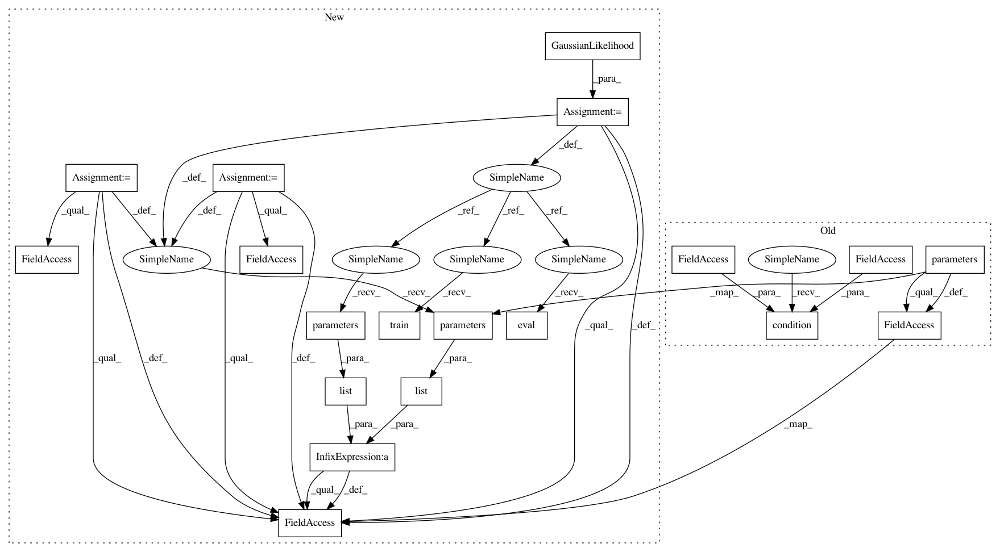

bce6052bd84a421a44bc590b1eda23923f63b951,test/examples/kissgp_kronecker_product_regression_test.py,,test_kissgp_gp_mean_abs_error,#,53
Before Change
// Optimize the model
gp_model.train()
optimizer = optim.Adam(gp_model.parameters(), lr=0.2)
optimizer.n_iter = 0
for i in range(20):
optimizer.zero_grad()
output = gp_model(train_x)
loss = -gp_model.marginal_log_likelihood(output, train_y)
loss.backward()
optimizer.n_iter += 1
optimizer.step()
// Test the model
gp_model.eval()
gp_model.condition(train_x, train_y)
test_preds = gp_model(test_x).mean()
mean_abs_error = torch.mean(torch.abs(test_y - test_preds))
assert(mean_abs_error.data.squeeze()[0] < 0.1)
After Change
def test_kissgp_gp_mean_abs_error():
likelihood = GaussianLikelihood()
gp_model = GPRegressionModel(train_x.data, train_y.data, likelihood)
// Optimize the model
gp_model.train()
likelihood.train()
optimizer = optim.Adam(list(gp_model.parameters()) + list(likelihood.parameters()), lr=0.2)
optimizer.n_iter = 0
for i in range(20):
optimizer.zero_grad()
output = gp_model(train_x)
loss = -gp_model.marginal_log_likelihood(likelihood, output, train_y)
loss.backward()
optimizer.n_iter += 1
optimizer.step()
// Test the model
gp_model.eval()
likelihood.eval()
test_preds = likelihood(gp_model(test_x)).mean()
mean_abs_error = torch.mean(torch.abs(test_y - test_preds))
assert(mean_abs_error.data.squeeze()[0] < 0.1)
In pattern: SUPERPATTERN
Frequency: 3
Non-data size: 19
Instances
Project Name: cornellius-gp/gpytorch
Commit Name: bce6052bd84a421a44bc590b1eda23923f63b951
Time: 2018-01-24
Author: gpleiss@gmail.com
File Name: test/examples/kissgp_kronecker_product_regression_test.py
Class Name:
Method Name: test_kissgp_gp_mean_abs_error
Project Name: cornellius-gp/gpytorch
Commit Name: bce6052bd84a421a44bc590b1eda23923f63b951
Time: 2018-01-24
Author: gpleiss@gmail.com
File Name: test/examples/kissgp_kronecker_product_regression_test.py
Class Name:
Method Name: test_kissgp_gp_mean_abs_error
Project Name: cornellius-gp/gpytorch
Commit Name: bce6052bd84a421a44bc590b1eda23923f63b951
Time: 2018-01-24
Author: gpleiss@gmail.com
File Name: test/examples/simple_gp_regression_test.py
Class Name:
Method Name: test_posterior_latent_gp_and_likelihood_with_optimization
Project Name: cornellius-gp/gpytorch
Commit Name: bce6052bd84a421a44bc590b1eda23923f63b951
Time: 2018-01-24
Author: gpleiss@gmail.com
File Name: test/examples/spectral_mixture_gp_regression_test.py
Class Name:
Method Name: test_spectral_mixture_gp_mean_abs_error